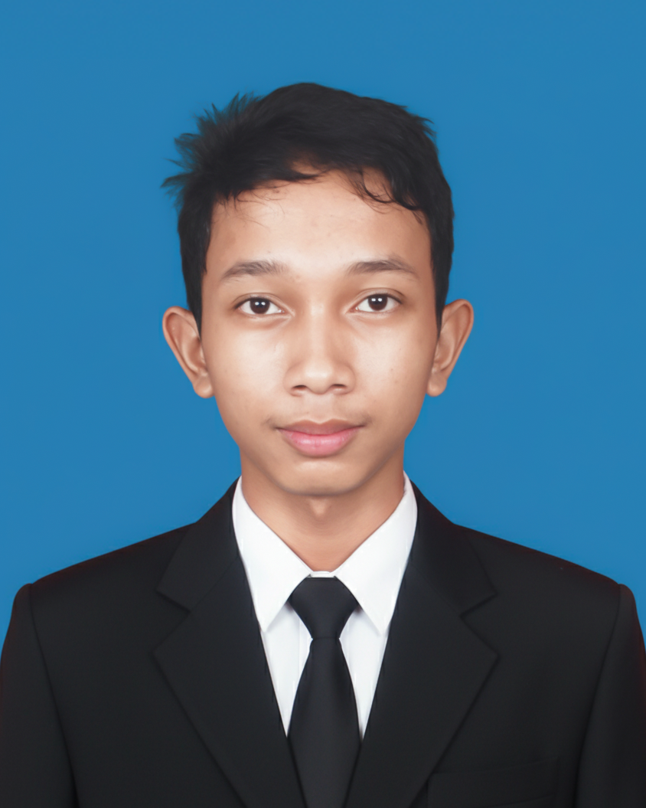

Esai & Penulisan
Menulis esai komunikasi publik, catatan literasi buku, dan refleksi seputar antarmuka digital secara runtut.
Batubara, Sumatera Utara · Jurnal & Arsip Karya
Ruang publik Usvandre Nur (vandroidd)—mahasiswa S1 Ilmu Komunikasi Universitas Terbuka dan pengembang web bersertifikasi BNSP—untuk esai komunikasi, desain identitas visual, dan proyek digital.
Jejak belajar, platform, dan ekosistem teknologi
Tersertifikasi Pengembang Web Pratama / Junior Web Developer (2024)
Desain logo, produksi video, esai komunikasi, dan pengembangan web
Didukung basis data PostgreSQL serta umpan terpadu Substack dan Threads
Latar belakang Rekayasa Perangkat Lunak dan studi Ilmu Komunikasi berpadu dalam cara saya bekerja: struktur data harus rapi, tetapi pesan tetap jernih bagi manusia.
Menulis esai komunikasi publik, catatan literasi buku, dan refleksi seputar antarmuka digital secara runtut.
Merancang antarmuka web responsif, dashboard operasional, serta integrasi SQL PostgreSQL dan API serverless di Vercel.
Merancang identitas visual Infinite Esport, penyuntingan video profil dan dokumentasi, serta fotografi studio.
Jurnal & Esai
Belum ada tulisan yang cocok dengan kata kunci atau kategori tersebut.
Profil & Sorotan Karya

Bertumbuh di Kabupaten Batubara, Sumatera Utara. Menempuh S1 Ilmu Komunikasi di Universitas Terbuka setelah menamatkan Rekayasa Perangkat Lunak di SMKN 1 Air Putih.
“Teknologi memberi bentuk pada karya, sedangkan kejelasan komunikasi membuatnya bermakna.”
Identitas Visual · Drive work out
Kumpulan rancangan logo, simbol monogram, dan identitas merek dari arsip kerja kreatif di Google Drive.
Portofolio Pilihan
Daftar lengkap proyek aplikasi web, produksi video, dan identitas visual.
Rekam Jejak
Ringkasan perjalanan akademik, sertifikasi kompetensi BNSP, dan pengalaman kerja lapangan.
Bagian Khusus · Umpan Terpadu
Terbitan baru dari Substack (@vandroidd) dan Threads (@usvandrnr) digabung dalam satu linimasa. Setiap entri hanya menampilkan cuplikan pembuka sebelum diarahkan ke platform asalnya.
Terbuka untuk diskusi seputar penulisan, pengembangan antarmuka web, desain logo, produksi video pendek, maupun kolaborasi konten.